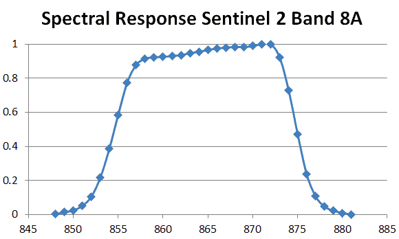

 |
Each band of a satellite has a spectral response curve. While we often state that the band has a width in micons and think of it as a boxcar filter (the sensor ignores all wavelengths outside the band, and collects all energy within the band), the true response has a region with almost all energy collected, and shoulders on either side where the response trails off to zero. |
Last revision 9/4/2020